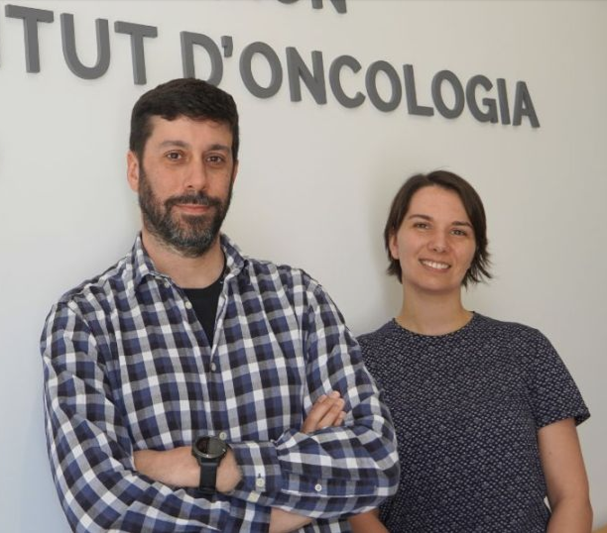
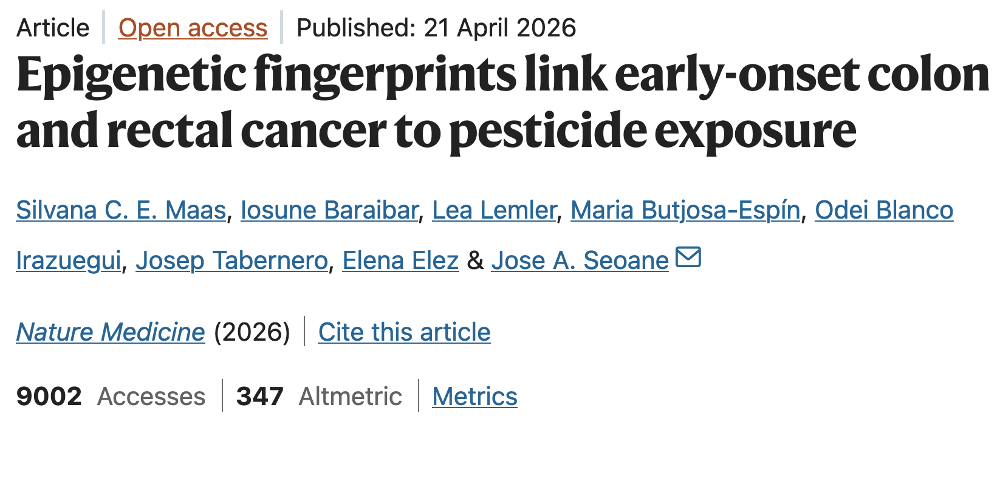
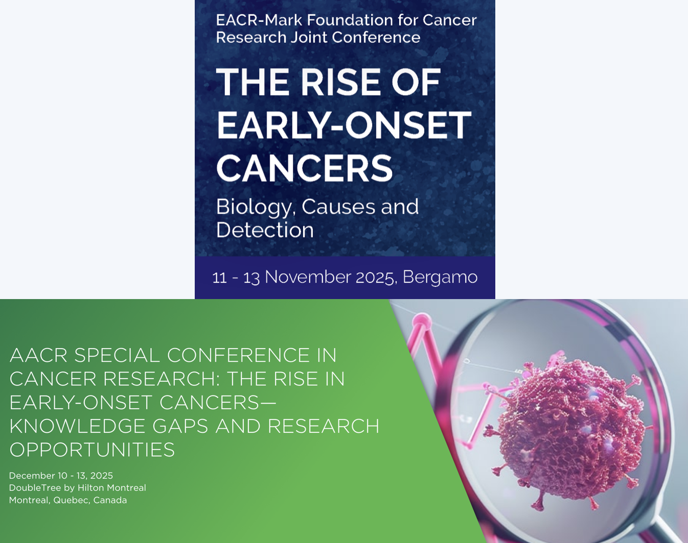

Cancer Computational Biology Group webpage @VHIO

About us:
The Cancer Computational Biology group leverages epi(genetic) cancer datasets in order to discover the molecular mechanisms involved with cancer initiation, progression, drug resistance and metastasis in order to improve patient outcomes. We aim to advance insights into the role of chromatin regulatory elements in treatment response and metastasis, develop novel epigenetic synthetic lethality-based therapeutic strategies, improve patient stratification through multi-omics analysis, and identify novel epigenetic biomarkers of treatment response. We have shown how the genes that modify the chromatin structure are associated with chemotherapy resistance in breast cancer (Nature Medicine, 2019). We are interested in understanding how these epigenetic modifications affect drug resistance and how epigenetic drugs can be used to target tumour suppressor genes. We are also interested in machine learning based integration of multi-omic datasets in order to discover new cancer subgroups and biomarkers, and prediction of outcome and drug response. We have participated in multiple international consortia including The Cancer Genome Atlas, Human Tumor Atlas Network, Cancer Target Discovery and Development and most recently AURORA (Metastatic breast cancer multi-omic cohort).
News:
Poster presentation
Juan Rafael Valera, PhD student at UAB, presented his latest research at the AI for Oncology and Cancer Research 2026 conference organized by the recently created European Interdisciplinary Society for AI in Cancer Research (ESAC). This work introduces a novel transformer-based multimodal framework that integrates digital pathology images and molecular data to improve prognosis prediction across multiple cancer types. By combining heterogeneous data modalities through advanced AI methodologies, the study aims to capture complementary biological and histopathological signals that are often missed by unimodal approaches.

Media Coveraged
Our paper, published in Nature Medicine studying the links between early-onset colorectal cancer and environmental factors use is recieving a lot of news coverage! In spanish medias such as El Mundo, El Periodico, 3cat, but also in international newspaper, such as Business Insider or The Times of India.

Our Nature Medicine Paper
Our latest work is now published in Nature Medicine. In this study, we investigated risk factors specific to early-onset colorectal cancer by comparing patients diagnosed before age 50 with those diagnosed after 70. Using methylation-derived scores as proxies for environmental and lifestyle exposures, we confirmed known associations—such as smoking and low adherence to a Mediterranean diet—and identified picloram, a widely used herbicide, as a potential novel risk factor. These findings contribute to a growing effort to understand how the exposome influences the rising burden of early-onset cancer, with the aim of improving prevention strategies.
Ayuda Postdoctoral AECC 2025
We are excited to share that our postdoc, Dr. Silvana Maas, has been awarded the Ayuda Postdoctoral AECC 2025 for her project “Integrating the exposome into the prevention and treatment of the early-onset cancer epidemic.” In this project, we aim to identify modifiable risk factors contributing to the rise in cancer diagnoses in people under 50 by studying the molecular “fingerprints” environmental exposures leave on our DNA. We will investigate how these exposures shape tumor development and whether they can help identify patients who may benefit from more effective therapies using already approved drugs.
Ayuda LAB AECC 2025
We are excited to share that our project "De novo subtype definition and characterisation of BRAF-V600E colorectal cancer patients" has been awarded €400,000 in funding. Led by Dr. Jose Seoane, and with major contribution of Dr. Lea Lemler, the project will focus on a subgroup of colorectal cancer patients with an exceptionally aggressive form of the disease. We aim to understand why some patients with BRAF-V600E–mutated CRC respond well to targeted therapies, while others show limited or no response. Our ultimate goal is to help move beyond a one-size-fits-all approach and contribute to more personalised treatment strategies for these patients.

Conference presentations
As the incidence of early-onset cancers increases, both the American and European associations for cancer research organized a conference focusing on early-onset cancers. Dr. Maas presented our work on epigenetic signatures of the exposome in early-onset colorectal cancer at the EACR-Mark Foundation Joint Conference in November in Bergamo, Italy, and last week during the AACR Special Conference in Montreal, Quebec, Canada.

Our new review
We just published a new review about epigenetic synthetic lethality. In this paper led by Maria Farina-Morillas in collaboration with the Vall d'Hebron Instituto de Reserca, our team explores how synergies of experimental and computational approaches can provide new opportunities for targeted intervention in cancer treatment.

A new Master Student
Núria Montalà Palau, a student from the UPF's Bioinformatic for Health Sciences MSC, has join our team. She will work with us for a year, exploring new deep learning techniques for early detection of cancer in serum microRNA.
Beca "Josep Bombardo Navines"!
The project of BRAF colorectal cancer characterization has been funded by the Fundacion Olga Torres with
the Beca "Josep Bombardo Navines" for Consolidated Researchers.
Thank you so much to Fundacion Olga Torres for the support!

Our second review!
Our second review this year has been published, co-led by Silvana CE Maas about the Exposomal determinants of non-genetic plasticity in tumor initiation. You can check the paper here.

A new review!
Our lab just published a review, led by Arnau Llinas and Maria Butjosa. They are exploring the literature about Multimodal data integration in early-stage breast cancer. You can find the paper here.

A new student!
We welcome Xavi Viñas, a Master student helping us exploring the epigenetic impact of environmental exposures in lung cancer.

A new student!
We welcome Taras Yuziv Duda, our new Bachelor student working on BRAF mutation in Colon Cancer, specifically the BRAF V600E mutation. By comparing the transcriptional programs between BRAFV600E and BRAF nonV600E, he’s trying to figure out why the nonV600E type has a better prognosis than V600E. After, he will also delve deeper in the transcription factor activity behind each mutation type.
Our founders: